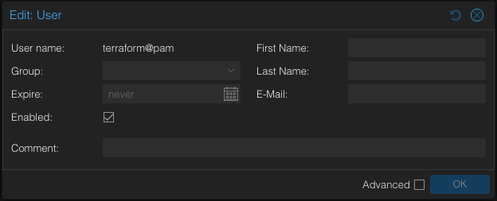
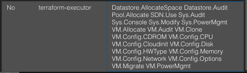
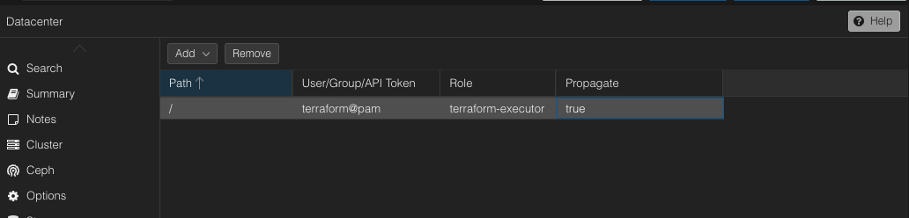
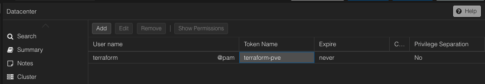

OpenTofu/Terraform Setup¶
How I set up OpenTofu to provision VMs on Proxmox with proper secrets management.
Why This Way?¶
- Secrets come from Infisical at runtime - nothing hardcoded in the provider config
- State files live in MinIO (S3-compatible) so I can run this from any machine
- Everything's in code so I can recreate the infrastructure whenever I need to
The Setup¶
Secrets (Proxmox API token, MinIO credentials) are stored in Infisical under the /tofu path. When I run OpenTofu commands, they're wrapped with infisical run which injects the secrets as environment variables.
The state backend points to MinIO (terraform-states bucket) instead of storing state locally.
Provider Configuration¶
Here's my Proxmox provider setup from provider.tf:
terraform {
required_providers {
proxmox = {
source = "Telmate/proxmox"
version = "3.0.2-rc05"
}
}
}
provider "proxmox" {
# URL API Proxmox VE
pm_api_url = "https://pve.dawo9889-homelab.ovh/api2/json"
# Rest of the authentication details are sourced from environment variables
# PM_API_TOKEN_ID
# PM_API_TOKEN_SECRET
}
The provider picks up PM_API_TOKEN_ID and PM_API_TOKEN_SECRET from environment variables (injected by Infisical).
Setting Up Proxmox¶
First, create a user in Proxmox for Terraform:

Create a dedicated role with only the permissions Terraform needs:

Assign that role to the Terraform user:

Generate an API token for that user:

Storing Secrets in Infisical¶
Take the token ID and secret from Proxmox and save them in Infisical at path /tofu. See the Infisical setup guide for details on managing secrets.
Keys I'm storing in Infisical:
PM_API_TOKEN_ID: Proxmox API Token IDPM_API_TOKEN_SECRET: Proxmox API Token SecretAWS_ACCESS_KEY_ID: MinIO access key (for the S3 backend)AWS_SECRET_ACCESS_KEY: MinIO secret key
These get picked up automatically by the Proxmox provider and S3 backend.
Running OpenTofu Commands¶
# Initialize the backend with secrets from Infisical
infisical run --env=prod --path=/tofu -- tofu init -reconfigure
# Plan and apply
infisical run --env=prod --path=/tofu -- tofu plan
infisical run --env=prod --path=/tofu -- tofu apply
State Backend Configuration¶
See the MinIO setup guide for details on setting up the bucket and policies.
Here's my backend config from backend.tf:
terraform {
backend "s3" {
bucket = "terraform-states" # Name of the S3 bucket
endpoint = "https://s3.dawo9889-homelab.ovh"
key = "portfolio-cicd.tfstate" # Name of the tfstate file
# AWS_ACCESS_KEY_ID from env injected
# AWS_SECRET_ACCESS_KEY from env
region = "main" # Region validation will be skipped
skip_credentials_validation = true # Skip AWS related checks and validations
skip_requesting_account_id = true
skip_metadata_api_check = true
skip_region_validation = true
use_path_style = true
}
}
What this does:
bucket: The MinIO bucket name (terraform-states)endpoint: My MinIO S3 endpoint (behind a reverse proxy with HTTPS)key: Path and filename for the state file inside the bucket- Credentials come from
AWS_ACCESS_KEY_IDandAWS_SECRET_ACCESS_KEYenv vars (Infisical injects these) region: Just a dummy value since MinIO doesn't really use regionsskip_*flags: Tell the backend to skip AWS-specific validationsuse_path_style: MinIO needs path-style addressing instead of virtual-hosted style
Running the init command with Infisical injects the credentials:
This way credentials never hit the git repo.